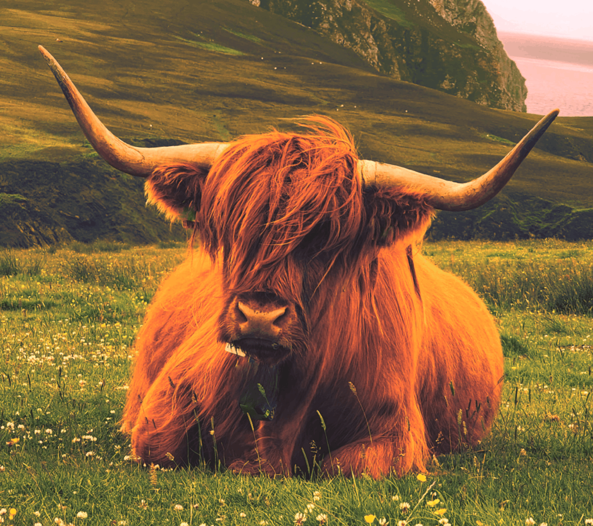
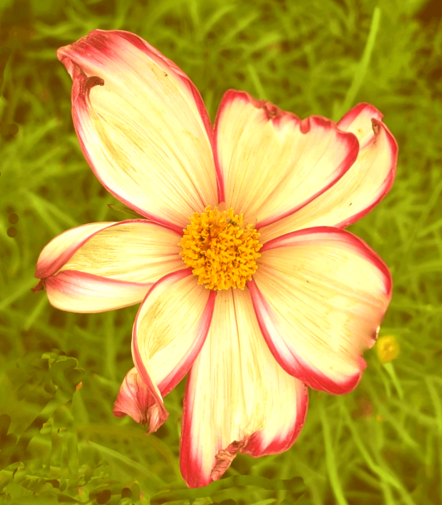
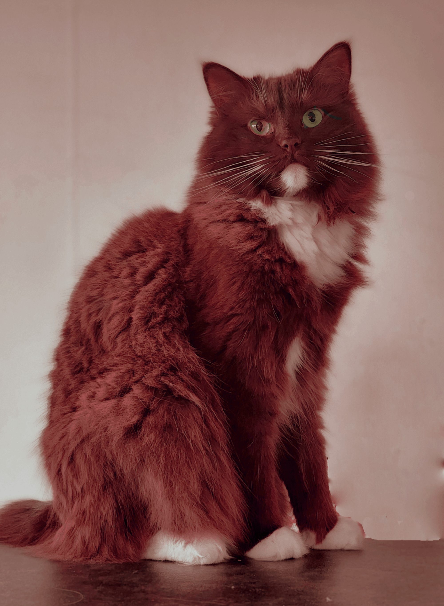

Här är bilderna nu redigerade på olika sätt i Photopea. I motsvarande bildruta under kan du se orginalet och jämföra med. En cyan-röd nyans är valda för alla 3 redigerade foton.

Bild 1
Vår ko har fått justering i Hue, Saturation samt lightness. Gamma correction sänkt. Colorbalance reducerat cyan-red. Crop-tool formaterade till bilden och den är formaterad till 2000px bredd innan exportering till PNG, quality 80% . Kons öronmärkningar samt koklocka klipptes ut med clone tool.

Bild 2
Blomman har fått mera lyster och färgkorrigeringar i colorbalance testades- där cyan-red ökades. Crop-tool klippte till bilden och den är formaterad till 2000px bredd innan exportering till PNG. Biet i mitten av blomman är borttagen.

Bild 3
Katten har fått korrigerad ögonfärg med colorpicker. Kudden i bilden är makulerad och bilden har fått en förstärkt colorbalance cyan-röd toning. Crop-tool beskuren och sedan formaterad inna till 2000px bredd innan exportert till png.

Bild 1 Original

Bild 2 Original

Bild 3 Original